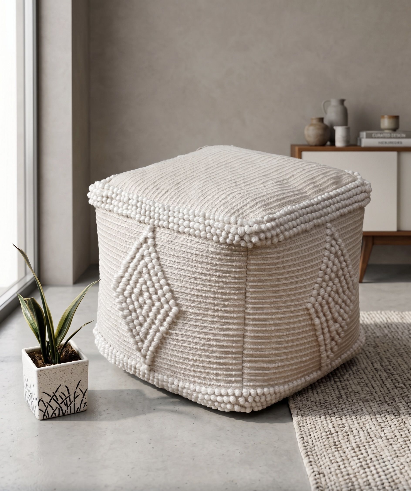
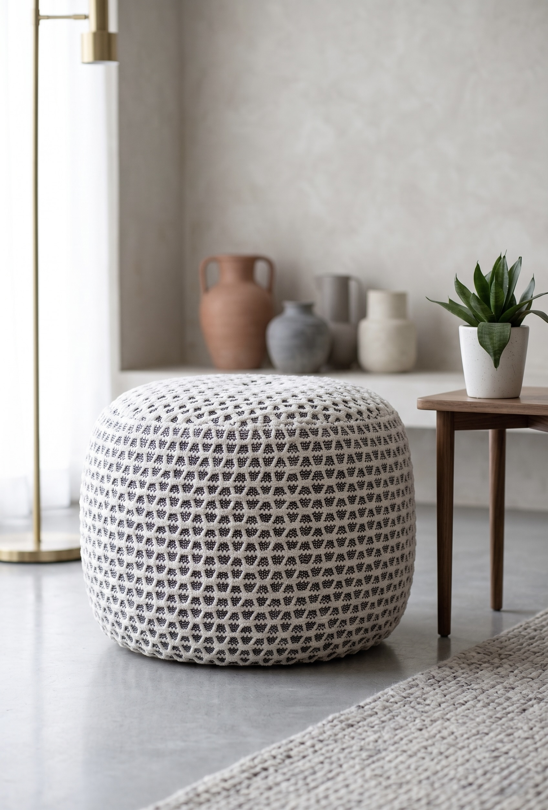
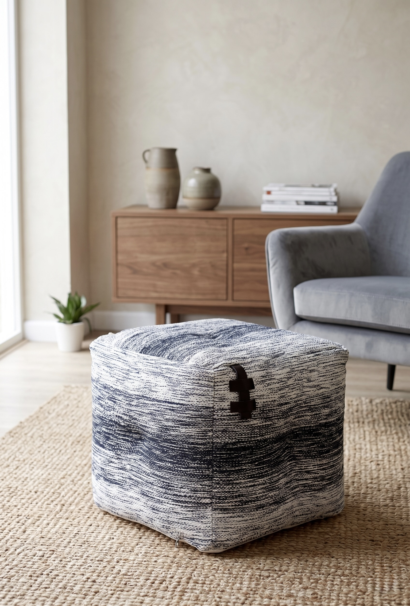
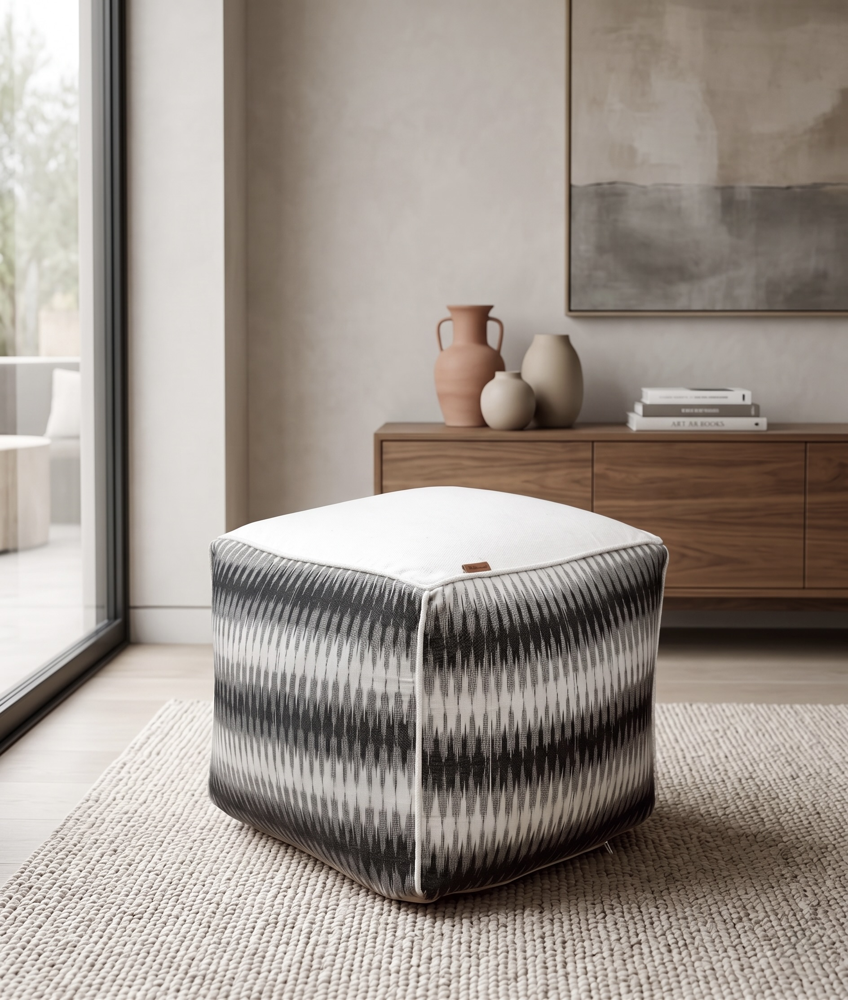
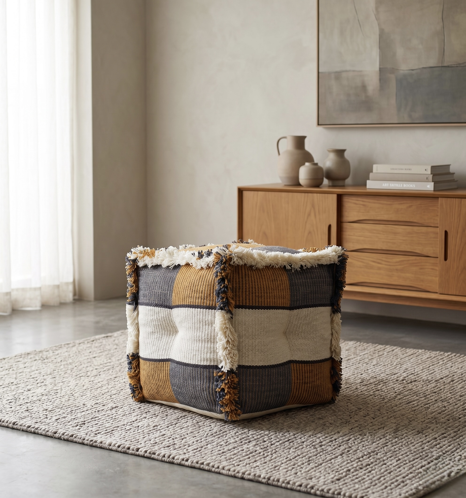
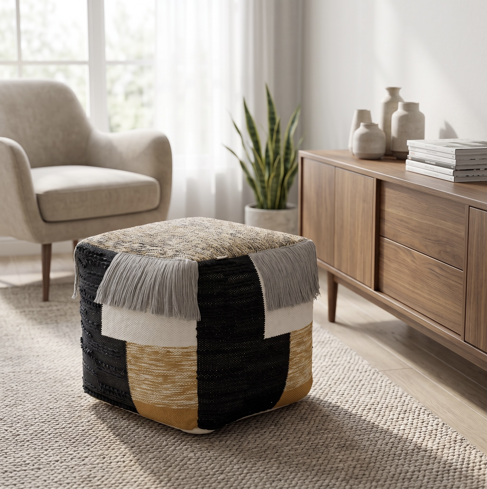
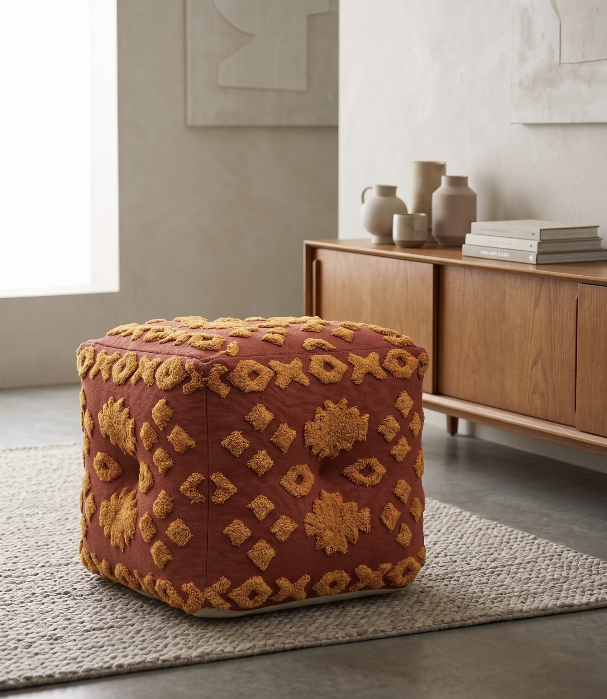
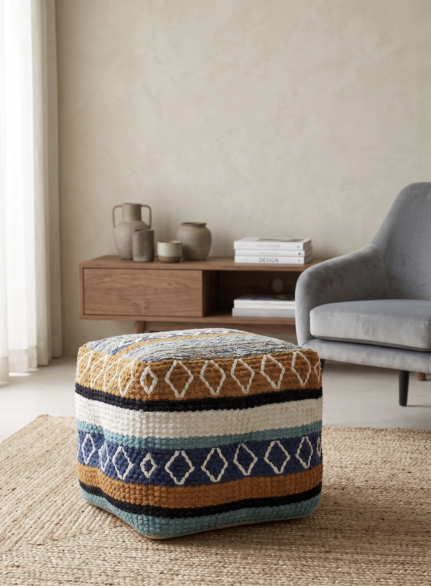
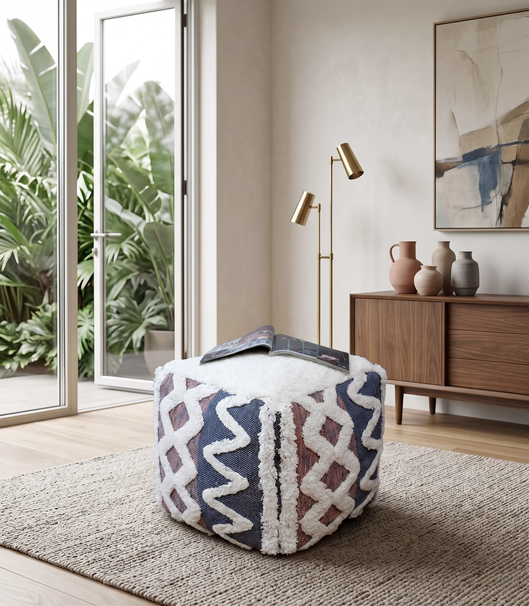

Floor & Seating
Artisanal Comfort for Contemporary Spaces
Seating Collection
A pouffe is one of the most expressive pieces in a room — functional, tactile and instantly character-defining. Our collection is produced using woven, tufted and embroidered techniques in cotton and cotton-blend fabrics, with designs that range from clean minimal ivory to bold multicolour tribal and boho patterns. All cube and round shapes available; custom sizes and colourways for trade orders.

AH-PF-005
All-ivory cube pouffe with a hand-tufted diamond and geometric pattern across all panels — rows of looped texture creating a raised, tactile relief on a clean white ground. Minimal, versatile and endlessly photographable. Works across Scandi, coastal and contemporary interiors. A reliable bestseller for lifestyle retail.

AH-PF-006
Generously rounded ottoman pouffe in white and grey with an all-over tufted dot texture. The round form makes it equally useful as a footstool or casual seat. The speckled two-tone pattern gives it a relaxed, contemporary character. Available in additional colourways; pairs beautifully with our cube designs.

AH-PF-002
Cube pouffe woven in a grey and white space-dyed cotton yarn that creates a subtle ombre, marbled effect. Leather handle detail on one side for easy repositioning. The understated palette makes it one of the most versatile in the range — works in virtually any interior. Clean, considered and contemporary.

AH-PF-008
Cube pouffe with a graphic grey and white ikat-inspired chevron weave on the side panels and a clean white flat-woven top. Leather tab detail. The bold geometric pattern has strong appeal for modern interiors and premium lifestyle retail. Structured, substantial and visually striking from every angle.

AH-PF-007
Cube pouffe in a bold ochre, grey and cream colour-block patchwork with chunky white fringe at all edges — artisanal, tactile and full of character. The rib-woven panels give it a textural depth that photographs exceptionally well. A standout piece for boho, mid-century and eclectic interiors retail.

AH-PF-004
Cube pouffe in a graphic black, white and gold colour-block patchwork with woven texture and grey fringe trim on the top. Monochrome-meets-warm-gold palette that works with both modern minimal and eclectic interiors. A bold accent piece for lifestyle retail with strong visual impact on the shop floor or in editorial photography.

AH-PF-003
Rich terracotta cube pouffe with a hand-tufted mustard and ochre geometric pattern across all panels — diamond motifs, border details and a central medallion in raised loop pile. Warm, earthy and deeply artisanal. One of the most photographed pieces in the range; a natural fit for bohemian, global and earthy interiors retail.

AH-PF-001
Cube pouffe with bold horizontal stripe bands in ochre, navy, teal, white and black, with a tufted diamond motif running through the design. A vibrant, artisanal statement piece with global appeal — strong seller for world market, fair trade and boho lifestyle retail. The multicolour palette makes it a natural focal point in any room.

AH-PF-009
Cube pouffe in a navy and burgundy woven ground with an overlay of white hand-tufted geometric pattern — zigzag, diamond lattice and cross motifs in raised white loop pile. The contrast of dark woven base and bright tufted overlay gives it a bold, layered look with real artisan depth. A standout piece for eclectic and global interiors.
Request samples from our pouffe collection or discuss custom colourways, sizes and private label programmes with our trade team.